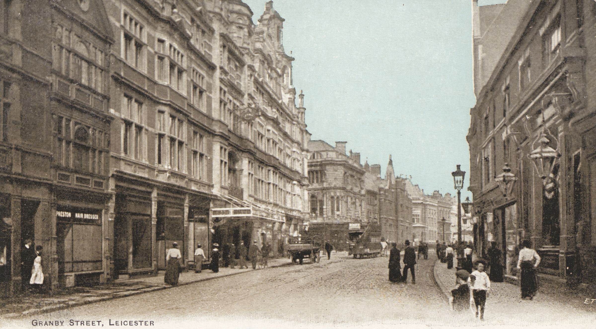

1898. The Grand Hotel opens
1909. Winston Churchill stays here
1915. A cinema opens upstairs
About 1903. Not a car in the street.
In 2024 the hotel got its 1898 shopfronts back.
Beat 01: held
Granby Street, Leicester, 2009. Army surplus, acupuncture, a chicken shop. Now look above the signs.
The picture is held and nothing changes yet: this beat is its first screen.
Beat 02: a swap
The same street, about 1903. Above the signs, almost nothing is different.
The postcard fades in over 2009. Scroll back up and it fades out.
gsap.from("#pic-1900s", {
opacity: 0,
duration: 1,
ease: "none",
scrollTrigger: {
trigger: "#beat-02-swap",
start: "top center",
toggleActions: "play none none reverse"
}
});Beat 03: one after another
The tall building is the Grand Hotel, once called the finest in the Midlands. Three things happened behind these windows.
Three markers, each 0.2 seconds after the last.
gsap.from(".marker", {
opacity: 0,
scale: 0,
duration: 0.4,
stagger: 0.2,
ease: "back.out(2)",
scrollTrigger: {
trigger: "#beat-03-markers",
start: "top center",
toggleActions: "play none none reverse"
}
});Beat 04: slide in
Leicester's trams were still pulled by horses. The first electric ones ran in May 1904.
The label starts 300 pixels to the left of where the CSS puts it.
gsap.from("#label", {
x: -300,
opacity: 0,
duration: 0.8,
ease: "power2.out",
scrollTrigger: {
trigger: "#beat-04-slide",
start: "top center",
toggleActions: "play none none reverse"
}
});Beat 05: two changes, in order
By 2009 the hotel was a Ramada above a row of plastic signs. That is not the end: the shopfronts have since been rebuilt in wood and glass, as close to the 1898 design as possible.
A timeline: 2009 fades back in, and when it has finished the caption rises.
const tl = gsap.timeline({
scrollTrigger: {
trigger: "#beat-05-in-order",
start: "top center",
toggleActions: "play none none reverse"
}
});
tl.from("#pic-c", { opacity: 0, duration: 1 })
.from("#caption-c", { opacity: 0, y: 40 });